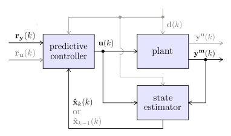

Functions: Predictive Controllers
All the predictive controllers in this module rely on a state estimator to compute the predictions. The default LinMPC estimator is a SteadyKalmanFilter, and NonLinMPC with nonlinear models, an UnscentedKalmanFilter. For simpler and more classical designs, an InternalModel structure is also available, that assumes by default that the current model mismatch estimation is constant in the future (same approach as dynamic matrix control, DMC).
The nomenclature uses boldfaces for vectors or matrices, capital boldface letters for vectors representing time series (and also for matrices), and hats for the predictions (and also for the observer estimations).
To be precise, at the $k$th control period, the vectors that encompass the future measured disturbances $\mathbf{d̂}$, model outputs $\mathbf{ŷ}$ and setpoints $\mathbf{r̂_y}$ over the prediction horizon $H_p$ are defined as:
\[ \mathbf{D̂} = \begin{bmatrix} \mathbf{d̂}(k+1) \\ \mathbf{d̂}(k+2) \\ \vdots \\ \mathbf{d̂}(k+H_p) \end{bmatrix} \: , \quad \mathbf{Ŷ} = \begin{bmatrix} \mathbf{ŷ}(k+1) \\ \mathbf{ŷ}(k+2) \\ \vdots \\ \mathbf{ŷ}(k+H_p) \end{bmatrix} \quad \text{and} \quad \mathbf{R̂_y} = \begin{bmatrix} \mathbf{r̂_y}(k+1) \\ \mathbf{r̂_y}(k+2) \\ \vdots \\ \mathbf{r̂_y}(k+H_p) \end{bmatrix}\]
in which $\mathbf{D̂}$, $\mathbf{Ŷ}$ and $\mathbf{R̂_y}$ are vectors of nd*Hp, ny*Hp and ny*Hp elements, respectively. The vectors for the manipulated input $\mathbf{u}$ are shifted by one time step:
\[ \mathbf{U} = \begin{bmatrix} \mathbf{u}(k+0) \\ \mathbf{u}(k+1) \\ \vdots \\ \mathbf{u}(k+H_p-1) \end{bmatrix} \quad \text{and} \quad \mathbf{R̂_u} = \begin{bmatrix} \mathbf{r̂_u}(k+0) \\ \mathbf{r̂_u}(k+1) \\ \vdots \\ \mathbf{r̂_u}(k+H_p-1) \end{bmatrix}\]
in which $\mathbf{U}$ and $\mathbf{R̂_u}$ are both vectors of nu*Hp elements. Defining the manipulated input increment as $\mathbf{Δu}(k+j) = \mathbf{u}(k+j) - \mathbf{u}(k+j-1)$, the control horizon $H_c$ enforces that $\mathbf{Δu}(k+j) = \mathbf{0}$ for $j ≥ H_c$. For this reason, the vector that collects them is truncated up to $k+H_c-1$ (without any custom move blocking):
\[ \mathbf{ΔU} = \begin{bmatrix} \mathbf{Δu}(k+0) \\ \mathbf{Δu}(k+1) \\ \vdots \\ \mathbf{Δu}(k+H_c-1) \end{bmatrix}\]
in which $\mathbf{ΔU}$ is a vector of nu*Hc elements.
The following block diagram depicts the main signals and their interconnections, in which the gray parts are features that are less commonly used, thus disabled by default.

PredictiveController
ModelPredictiveControl.PredictiveController — Type
Abstract supertype of all predictive controllers.
(mpc::PredictiveController)(ry, d=[]; kwargs...) -> uFunctor allowing callable PredictiveController object as an alias for moveinput!.
Examples
julia> mpc = LinMPC(LinModel(tf(5, [2, 1]), 3), Nwt=[0], Hp=1000, Hc=1, direct=false);
julia> u = mpc([5]); round.(u, digits=3)
1-element Vector{Float64}:
1.0LinMPC
ModelPredictiveControl.LinMPC — Type
LinMPC(model::LinModel; <keyword arguments>)Construct a linear predictive controller based on LinModel model.
The controller minimizes the following objective function at each discrete time $k$:
\[\begin{aligned} \min_{\mathbf{Z}, ϵ} \mathbf{(R̂_y - Ŷ)}' \mathbf{M}_{H_p} \mathbf{(R̂_y - Ŷ)} + \mathbf{(ΔU)}' \mathbf{N}_{H_c} \mathbf{(ΔU)} \\ + \mathbf{(R̂_u - U)}' \mathbf{L}_{H_p} \mathbf{(R̂_u - U)} + C ϵ^2 \end{aligned}\]
subject to setconstraint! bounds, and in which the weight matrices are repeated $H_p$ or $H_c$ times by default:
\[\begin{aligned} \mathbf{M}_{H_p} &= \text{diag}\mathbf{(M,M,...,M)} \\ \mathbf{N}_{H_c} &= \text{diag}\mathbf{(N,N,...,N)} \\ \mathbf{L}_{H_p} &= \text{diag}\mathbf{(L,L,...,L)} \end{aligned}\]
Time-varying and non-diagonal weights are also supported. Modify the last block in $\mathbf{M}_{H_p}$ to specify a terminal weight. The content of the decision vector $\mathbf{Z}$ depends on the chosen TranscriptionMethod (default to SingleShooting, hence $\mathbf{Z = ΔU}$). The $\mathbf{ΔU}$ includes the input increments $\mathbf{Δu}(k+j) = \mathbf{u}(k+j) - \mathbf{u}(k+j-1)$ from $j=0$ to $H_c-1$ (without any custom move blocking), the $\mathbf{Ŷ}$ vector, the output predictions $\mathbf{ŷ}(k+j)$ from $j=1$ to $H_p$, and the $\mathbf{U}$ vector, the manipulated inputs $\mathbf{u}(k+j)$ from $j=0$ to $H_p-1$. The slack variable $ϵ$ relaxes the constraints, as described in setconstraint! documentation. See Extended Help for a detailed nomenclature.
This method uses the default state estimator, a SteadyKalmanFilter with default arguments. This controller allocates memory at each time step for the optimization.
Arguments
model::LinModel: model used for controller predictions and state estimations.Hp::Int=10+nk: prediction horizon $H_p$,nkis the number of delays inmodel.Hc::Union{Int, Vector{Int}}=2: control horizon $H_c$, custom move blocking pattern is specified with a vector of integers (seemove_blockingfor details).Mwt=fill(1.0,model.ny): main diagonal of $\mathbf{M}$ weight matrix (vector).Nwt=fill(0.1,model.nu): main diagonal of $\mathbf{N}$ weight matrix (vector).Lwt=fill(0.0,model.nu): main diagonal of $\mathbf{L}$ weight matrix (vector).M_Hp=Diagonal(repeat(Mwt,Hp)): positive semidefinite symmetric matrix $\mathbf{M}_{H_p}$.N_Hc=Diagonal(repeat(Nwt,Hc)): positive semidefinite symmetric matrix $\mathbf{N}_{H_c}$.L_Hp=Diagonal(repeat(Lwt,Hp)): positive semidefinite symmetric matrix $\mathbf{L}_{H_p}$.Wy=nothing: custom linear constraint matrix for output (see Extended Help).Wu=nothing: custom linear constraint matrix for manipulated input (see Extended Help).Wd=nothing: custom linear constraint matrix for meas. disturbance (see Extended Help).Wr=nothing: custom linear constraint matrix for output setpoint (see Extended Help).Cwt=1e5: slack variable weight $C$ (scalar), useCwt=Inffor hard constraints only.transcription=SingleShooting():SingleShootingorMultipleShooting.optim=JuMP.Model(OSQP.MathOptInterfaceOSQP.Optimizer): quadratic optimizer used in the predictive controller, provided as aJuMP.Modelobject (default toOSQPoptimizer).- additional keyword arguments are passed to
SteadyKalmanFilterconstructor.
Examples
julia> model = LinModel([tf(3, [30, 1]); tf(-2, [5, 1])], 4);
julia> mpc = LinMPC(model, Mwt=[0, 1], Nwt=[0.5], Hp=30, Hc=1)
LinMPC controller with a sample time Ts = 4.0 s:
├ estimator: SteadyKalmanFilter
├ model: LinModel
├ optimizer: OSQP
├ transcription: SingleShooting
└ dimensions:
│ ├ 30 prediction steps Hp
│ ├ 1 control steps Hc
│ ├ 1 manipulated inputs u (0 integrating states)
│ ├ 4 estimated states x̂
│ ├ 2 measured outputs ym (2 integrating states)
│ ├ 0 unmeasured outputs yu
│ └ 0 measured disturbances d
└ optimization:
├ 2 decision variables Z̃ (1 slack variable, 1 bounds)
├ 0 linear inequality constraints A (0 custom)
└ 0 linear equality constraints AeqExtended Help
Extended Help
Manipulated inputs setpoints $\mathbf{r_u}$ are not common but they can be interesting for over-actuated systems, when nu > ny (e.g. prioritize solutions with lower economical costs). The default Lwt value implies that this feature is disabled by default.
The custom linear constraint matrices Wy, Wu, Wd, and Wr allow to define constraints based on linear combinations of outputs, manipulated inputs, measured disturbances, and output setpoints, respectively. See the Extended Help section in setconstraint! documentation for more details.
The objective function follows this nomenclature:
| VARIABLE | DESCRIPTION | SIZE |
|---|---|---|
| $H_p$ | prediction horizon (integer) | () |
| $H_c$ | control horizon (integer) | () |
| $\mathbf{Z}$ | decision variable vector (excluding $ϵ$) | var. |
| $\mathbf{ΔU}$ | manipulated input increments over $H_c$ | (nu*Hc,) |
| $\mathbf{D̂}$ | predicted measured disturbances over $H_p$ | (nd*Hp,) |
| $\mathbf{Ŷ}$ | predicted outputs over $H_p$ | (ny*Hp,) |
| $\mathbf{X̂}$ | predicted states over $H_p$ | (nx̂*Hp,) |
| $\mathbf{U}$ | manipulated inputs over $H_p$ | (nu*Hp,) |
| $\mathbf{R̂_y}$ | predicted output setpoints over $H_p$ | (ny*Hp,) |
| $\mathbf{R̂_u}$ | predicted manipulated input setpoints over $H_p$ | (nu*Hp,) |
| $\mathbf{M}_{H_p}$ | output setpoint tracking weights over $H_p$ | (ny*Hp, ny*Hp) |
| $\mathbf{N}_{H_c}$ | manipulated input increment weights over $H_c$ | (nu*Hc, nu*Hc) |
| $\mathbf{L}_{H_p}$ | manipulated input setpoint tracking weights over $H_p$ | (nu*Hp, nu*Hp) |
| $C$ | slack variable weight | () |
| $ϵ$ | slack variable for constraint softening | () |
LinMPC(estim::StateEstimator; <keyword arguments>)Use custom state estimator estim to construct LinMPC.
estim.model must be a LinModel. Else, a NonLinMPC is required. See ManualEstimator for linear controllers with nonlinear state estimation.
Examples
julia> estim = KalmanFilter(LinModel([tf(3, [30, 1]); tf(-2, [5, 1])], 4), i_ym=[2]);
julia> mpc = LinMPC(estim, Mwt=[0, 1], Nwt=[0.5], Hp=30, Hc=1)
LinMPC controller with a sample time Ts = 4.0 s:
├ estimator: KalmanFilter
├ model: LinModel
├ optimizer: OSQP
├ transcription: SingleShooting
└ dimensions:
│ ├ 30 prediction steps Hp
│ ├ 1 control steps Hc
│ ├ 1 manipulated inputs u (0 integrating states)
│ ├ 3 estimated states x̂
│ ├ 1 measured outputs ym (1 integrating states)
│ ├ 1 unmeasured outputs yu
│ └ 0 measured disturbances d
└ optimization:
├ 2 decision variables Z̃ (1 slack variable, 1 bounds)
├ 0 linear inequality constraints A (0 custom)
└ 0 linear equality constraints AeqConversion to LinearMPC.jl (code generation)
LinearMPC.MPC — Type
LinearMPC.MPC(mpc::LinMPC)Convert a ModelPredictiveControl.LinMPC object to a LinearMPC.MPC object.
The LinearMPC package needs to be installed and available in the activated Julia environment. The converted object can be used to generate lightweight C code for embedded applications using the LinearMPC.codegen function. Note that not all features of LinMPC are supported, including these restrictions:
- the solver is limited to
DAQP. - the transcription method must be
SingleShooting. - the state estimator must be a
SteadyKalmanFilterwithdirect=true. - only block-diagonal weights are allowed.
- the constraint relaxation mechanism is different, so a 1-on-1 conversion of the soft constraints is impossible; expect differences in closed-loop behavior near the soft bounds (or use
Cwt=Infto disable relaxation)
But the package has also several exclusive functionalities, such as pre-stabilization, constrained explicit MPC, and binary manipulated inputs. See the LinearMPC.jl documentation for more details on the supported features and how to generate code.
Examples
julia> import LinearMPC, JuMP, DAQP;
julia> mpc1 = LinMPC(LinModel(tf(2, [10, 1]), 1.0); optim=JuMP.Model(DAQP.Optimizer));
julia> preparestate!(mpc1, [1.0]);
julia> u = moveinput!(mpc1, [10.0]); round.(u, digits=6)
1-element Vector{Float64}:
17.577311
julia> mpc2 = LinearMPC.MPC(mpc1);
julia> x̂ = LinearMPC.correct_state!(mpc2, [1.0]);
julia> u = LinearMPC.compute_control(mpc2, x̂, r=[10.0]); round.(u, digits=6)
1-element Vector{Float64}:
17.577311ExplicitMPC
ModelPredictiveControl.ExplicitMPC — Type
ExplicitMPC(model::LinModel; <keyword arguments>)Construct an explicit linear predictive controller based on LinModel model.
The controller minimizes the following objective function at each discrete time $k$:
\[\begin{aligned} \min_{\mathbf{ΔU}} \mathbf{(R̂_y - Ŷ)}' \mathbf{M}_{H_p} \mathbf{(R̂_y - Ŷ)} + \mathbf{(ΔU)}' \mathbf{N}_{H_c} \mathbf{(ΔU)} \\ + \mathbf{(R̂_u - U)}' \mathbf{L}_{H_p} \mathbf{(R̂_u - U)} \end{aligned}\]
See LinMPC for the variable definitions. This controller does not support constraints but the computational costs are extremely low (array division), therefore suitable for applications that require small sample times. The keyword arguments are identical to LinMPC, except for Cwt, Wy, Wu, Wd, Wr, transcription and optim, which are not supported. It uses a SingleShooting transcription method and is allocation-free.
This method uses the default state estimator, a SteadyKalmanFilter with default arguments.
Examples
julia> model = LinModel([tf(3, [30, 1]); tf(-2, [5, 1])], 4);
julia> mpc = ExplicitMPC(model, Mwt=[0, 1], Nwt=[0.5], Hp=30, Hc=1)
ExplicitMPC controller with a sample time Ts = 4.0 s:
├ estimator: SteadyKalmanFilter
├ model: LinModel
└ dimensions:
├ 30 prediction steps Hp
├ 1 control steps Hc
├ 1 manipulated inputs u (0 integrating states)
├ 4 estimated states x̂
├ 2 measured outputs ym (2 integrating states)
├ 0 unmeasured outputs yu
└ 0 measured disturbances dExplicitMPC(estim::StateEstimator; <keyword arguments>)Use custom state estimator estim to construct ExplicitMPC.
estim.model must be a LinModel. Else, a NonLinMPC is required.
NonLinMPC
ModelPredictiveControl.NonLinMPC — Type
NonLinMPC(model::SimModel; <keyword arguments>)Construct a nonlinear predictive controller based on SimModel model.
Both NonLinModel and LinModel are supported (see Extended Help). The controller minimizes the following objective function at each discrete time $k$:
\[\begin{aligned} \min_{\mathbf{Z}, ϵ}\ & \mathbf{(R̂_y - Ŷ)}' \mathbf{M}_{H_p} \mathbf{(R̂_y - Ŷ)} + \mathbf{(ΔU)}' \mathbf{N}_{H_c} \mathbf{(ΔU)} \\& + \mathbf{(R̂_u - U)}' \mathbf{L}_{H_p} \mathbf{(R̂_u - U)} + C ϵ^2 + E J_E(\mathbf{U_e}, \mathbf{Ŷ_e}, \mathbf{D̂_e}, \mathbf{p}, ϵ) \end{aligned}\]
subject to setconstraint! bounds, and the custom inequality constraints:
\[\mathbf{g_c}(\mathbf{U_e, Ŷ_e, D̂_e, p}, ϵ) ≤ \mathbf{0}\]
with the decision variables $\mathbf{Z}$ and slack $ϵ$. By default, a SingleShooting transcription method is used, hence $\mathbf{Z=ΔU}$. The economic function $J_E$ can penalizes solutions with high economic costs. Setting all the weights to 0 except $E$ creates a pure economic model predictive controller (EMPC). As a matter of fact, $J_E$ can be any nonlinear function as a custom objective, even if there is no economic interpretation to it. The arguments of $J_E$ and $\mathbf{g_c}$ include the manipulated inputs, predicted outputs and measured disturbances, extended from $k$ to $k+H_p$ (inclusively, see Extended Help for more details):
\[ \mathbf{U_e} = \begin{bmatrix} \mathbf{U} \\ \mathbf{u}(k+H_p-1) \end{bmatrix} , \quad \mathbf{Ŷ_e} = \begin{bmatrix} \mathbf{ŷ}(k) \\ \mathbf{Ŷ} \end{bmatrix} , \quad \mathbf{D̂_e} = \begin{bmatrix} \mathbf{d}(k) \\ \mathbf{D̂} \end{bmatrix}\]
The argument $\mathbf{p}$ is a custom parameter object of any type, but use a mutable one if you want to modify it later e.g.: a vector. See LinMPC Extended Help for the definition of the other variables.
Replace any of the arguments of $J_E$ and $\mathbf{g_c}$ functions with _ if not needed (see e.g. the default value of JE below).
This method uses the default state estimator:
- if
modelis aLinModel, aSteadyKalmanFilterwith default arguments; - else, an
UnscentedKalmanFilterwith default arguments.
This controller allocates memory at each time step for the optimization.
See Extended Help if you get an error like: MethodError: no method matching Float64(::ForwardDiff.Dual).
Arguments
model::SimModel: model used for controller predictions and state estimations.Hp::Int=10+nk: prediction horizon $H_p$,nkis the number of delays ifmodelis aLinModel(must be specified otherwise).Hc::Union{Int, Vector{Int}}=2: control horizon $H_c$, custom move blocking pattern is specified with a vector of integers (seemove_blockingfor details).Mwt=fill(1.0,model.ny): main diagonal of $\mathbf{M}$ weight matrix (vector).Nwt=fill(0.1,model.nu): main diagonal of $\mathbf{N}$ weight matrix (vector).Lwt=fill(0.0,model.nu): main diagonal of $\mathbf{L}$ weight matrix (vector).M_Hp=Diagonal(repeat(Mwt,Hp)): positive semidefinite symmetric matrix $\mathbf{M}_{H_p}$.N_Hc=Diagonal(repeat(Nwt,Hc)): positive semidefinite symmetric matrix $\mathbf{N}_{H_c}$.L_Hp=Diagonal(repeat(Lwt,Hp)): positive semidefinite symmetric matrix $\mathbf{L}_{H_p}$.Cwt=1e5: slack variable weight $C$ (scalar), useCwt=Inffor hard constraints only.Wy=nothing: custom linear constraint matrix for output (see Extended Help).Wu=nothing: custom linear constraint matrix for manipulated input (see Extended Help).Wd=nothing: custom linear constraint matrix for meas. disturbance (see Extended Help).Wr=nothing: custom linear constraint matrix for output setpoint (see Extended Help).Ewt=0.0: economic costs weight $E$ (scalar).JE=(_,_,_,_,_)->0.0: economic or custom cost function $J_E(\mathbf{U_e}, \mathbf{Ŷ_e}, \mathbf{D̂_e}, \mathbf{p}, ϵ)$.gc=(_,_,_,_,_,_)->nothingorgc!: custom nonlinear inequality constraint function $\mathbf{g_c}(\mathbf{U_e}, \mathbf{Ŷ_e, D̂_e, p}, ϵ)$, mutating or not (details in Extended Help).nc=0: number of custom nonlinear inequality constraints.p=model.p: $J_E$ and $\mathbf{g_c}$ functions parameter $\mathbf{p}$ (any type).transcription=SingleShooting(): aTranscriptionMethodfor the optimization.optim=JuMP.Model(Ipopt.Optimizer): nonlinear optimizer used in the predictive controller, provided as aJuMP.Modelobject (default toIpoptoptimizer).gradient=AutoForwardDiff(): anAbstractADTypebackend for the gradient of the objective function, seeDifferentiationInterfacedoc.jacobian=default_jacobian(transcription): anAbstractADTypebackend for the Jacobian of the nonlinear constraints, seegradientabove for the options (default in Extended Help).hessian=false: anAbstractADTypebackend orBoolfor the Hessian of the Lagrangian, seegradientabove for the options. The defaultfalseskip it and use the quasi-Newton method ofoptim(see Extended Help).- additional keyword arguments are passed to
UnscentedKalmanFilterconstructor (orSteadyKalmanFilter, forLinModel).
Examples
julia> model = NonLinModel((x,u,_,_)->0.5x+u, (x,_,_)->2x, 10.0, 1, 1, 1, solver=nothing);
julia> mpc = NonLinMPC(model, Hp=20, Hc=10, transcription=MultipleShooting())
NonLinMPC controller with a sample time Ts = 10.0 s:
├ estimator: UnscentedKalmanFilter
├ model: NonLinModel
├ optimizer: Ipopt
├ transcription: MultipleShooting
├ gradient: AutoForwardDiff
├ jacobian: AutoSparse (AutoForwardDiff, TracerSparsityDetector, GreedyColoringAlgorithm)
├ hessian: nothing
└ dimensions:
│ ├ 20 prediction steps Hp
│ ├ 10 control steps Hc
│ ├ 1 manipulated inputs u (0 integrating states)
│ ├ 2 estimated states x̂
│ ├ 1 measured outputs ym (1 integrating states)
│ ├ 0 unmeasured outputs yu
│ └ 0 measured disturbances d
└ optimization:
├ 51 decision variables Z̃ (1 slack variable, 1 bounds)
├ 0 linear inequality constraints A (0 custom)
├ 20 linear equality constraints Aeq
├ 0 nonlinear inequality constraints g (0 custom)
└ 20 nonlinear equality constraints geqExtended Help
Extended Help
NonLinMPC controllers based on LinModel compute the predictions with matrix algebra instead of a for loop. This feature can accelerate the optimization, especially for the constraint handling, and is not available in any other package, to my knowledge. See setconstraint! for details about the custom linear inequality constraint matrices Wy, Wu, Wd and Wr. The Wy keyword argument can be provided only if model is a LinModel).
The economic cost $J_E$ and custom constraint $\mathbf{g_c}$ functions receive the extended vectors $\mathbf{U_e}$, $\mathbf{Ŷ_e}$ and $\mathbf{D̂_e}$ as arguments. They also receives the slack $ϵ$ (scalar), which is always zero if Cwt=Inf. The following table details the vector sizes and the time steps of the first and last data point in them.
| ARGUMENT | SIZE | FIRST SAMPLE | LAST SAMPLE |
|---|---|---|---|
| $\mathbf{U_e}$ | ((Hp+1)*nu,) | $k$ | $k + H_p$ |
| $\mathbf{Ŷ_e}$ | ((Hp+1)*ny,) | $k$ | $k + H_p$ |
| $\mathbf{D̂_e}$ | ((Hp+1)*nd,) | $k$ | $k + H_p$ |
| $\mathbf{p}$ | var. | — | — |
| $ϵ$ | () | — | — |
More precisely, the last two time steps in $\mathbf{U_e}$ are forced to be equal, i.e. $\mathbf{u}(k+H_p) = \mathbf{u}(k+H_p-1)$, since $H_c ≤ H_p$ implies that $\mathbf{Δu}(k+H_p) = \mathbf{0}$. The vectors $\mathbf{ŷ}(k)$ and $\mathbf{d}(k)$ are the current state estimator output and measured disturbance, respectively, and $\mathbf{Ŷ}$ and $\mathbf{D̂}$, their respective predictions from $k+1$ to $k+H_p$. If LHS represents the result of the left-hand side in the inequality $\mathbf{g_c}(\mathbf{U_e, Ŷ_e, D̂_e, p}, ϵ) ≤ \mathbf{0}$, the function gc can be implemented in two possible ways:
- Non-mutating function (out-of-place): define it as
gc(Ue, Ŷe, D̂e, p, ϵ) -> LHS. This syntax is simple and intuitive but it allocates more memory. - Mutating function (in-place): define it as
gc!(LHS, Ue, Ŷe, D̂e, p, ϵ) -> nothing. This syntax reduces the allocations and potentially the computational burden as well.
The keyword argument nc is the number of elements in LHS, and gc!, an alias for the gc argument (both gc and gc! accepts non-mutating and mutating functions).
By default, the optimization relies on dense ForwardDiff automatic differentiation (AD) to compute the objective and constraint derivatives. Two exceptions: if transcription is not a SingleShooting, the jacobian argument defaults to this sparse backend:
AutoSparse(
AutoForwardDiff();
sparsity_detector = TracerSparsityDetector(),
coloring_algorithm = GreedyColoringAlgorithm(
(
NaturalOrder(),
LargestFirst(),
SmallestLast(),
IncidenceDegree(),
DynamicLargestFirst(),
RandomOrder(StableRNG(0), 0)
),
postprocessing = true
)
)that is, it will test many coloring orders at preparation and keep the best. This is also the sparse backend selected for the Hessian of the Lagrangian function if hessian=true, which is the second exception.
Optimizers generally benefit from exact derivatives like AD. However, the NonLinModel state-space functions must be compatible with this feature. See JuMP documentation for common mistakes when writing these functions.
Note that if Cwt≠Inf, the attribute nlp_scaling_max_gradient of Ipopt is set to 10/Cwt (if not already set), to scale the small values of $ϵ$.
NonLinMPC(estim::StateEstimator; <keyword arguments>)Use custom state estimator estim to construct NonLinMPC.
Examples
julia> model = NonLinModel((x,u,_,_)->0.5x+u, (x,_,_)->2x, 10.0, 1, 1, 1, solver=nothing);
julia> estim = UnscentedKalmanFilter(model, σQint_ym=[0.05]);
julia> mpc = NonLinMPC(estim, Hp=20, Cwt=1e4)
NonLinMPC controller with a sample time Ts = 10.0 s:
├ estimator: UnscentedKalmanFilter
├ model: NonLinModel
├ optimizer: Ipopt
├ transcription: SingleShooting
├ gradient: AutoForwardDiff
├ jacobian: AutoForwardDiff
├ hessian: nothing
└ dimensions:
│ ├ 20 prediction steps Hp
│ ├ 2 control steps Hc
│ ├ 1 manipulated inputs u (0 integrating states)
│ ├ 2 estimated states x̂
│ ├ 1 measured outputs ym (1 integrating states)
│ ├ 0 unmeasured outputs yu
│ └ 0 measured disturbances d
└ optimization:
├ 3 decision variables Z̃ (1 slack variable, 1 bounds)
├ 0 linear inequality constraints A (0 custom)
├ 0 linear equality constraints Aeq
├ 0 nonlinear inequality constraints g (0 custom)
└ 0 nonlinear equality constraints geqMove Manipulated Input u
ModelPredictiveControl.moveinput! — Function
moveinput!(mpc::PredictiveController, ry=mpc.estim.model.yop, d=[]; <keyword args>) -> uCompute the optimal manipulated input value u for the current control period.
Solve the optimization problem of mpc PredictiveController and return the results $\mathbf{u}(k)$. Following the receding horizon principle, the algorithm discards the optimal future manipulated inputs $\mathbf{u}(k+1), \mathbf{u}(k+2), ...$ Note that the method mutates mpc internal data (it stores u - mpc.estim.model.uop at mpc.lastu0 for instance) but it does not modifies mpc.estim states. Call preparestate!(mpc, ym, d) before moveinput!, and updatestate!(mpc, u, ym, d) after, to update mpc state estimates. Setpoint and measured disturbance previews can be implemented with the R̂y, R̂u and D̂ keyword arguments.
Calling a PredictiveController object calls this method.
See also LinMPC, ExplicitMPC, NonLinMPC.
Arguments
mpc::PredictiveController: solve optimization problem ofmpc.ry=mpc.estim.model.yop: current output setpoints $\mathbf{r_y}(k)$.d=[]: current measured disturbances $\mathbf{d}(k)$.lastu=mpc.lastu0+mpc.estim.model.uop: last manipulated input $\mathbf{u}(k-1)$.D̂=repeat(d, mpc.Hp)orDhat: predicted measured disturbances $\mathbf{D̂}$, constant in the future by default or $\mathbf{d̂}(k+j)=\mathbf{d}(k)$ for $j=1$ to $H_p$.R̂y=repeat(ry, mpc.Hp)orRhaty: predicted output setpoints $\mathbf{R̂_y}$, constant in the future by default or $\mathbf{r̂_y}(k+j)=\mathbf{r_y}(k)$ for $j=1$ to $H_p$.R̂u=mpc.UoporRhatu: predicted manipulated input setpoints $\mathbf{R̂_u}$, constant in the future by default or $\mathbf{r̂_u}(k+j)=\mathbf{u_{op}}$ for $j=0$ to $H_p-1$.
Examples
julia> mpc = LinMPC(LinModel(tf(5, [2, 1]), 3), Nwt=[0], Hp=1000, Hc=1);
julia> preparestate!(mpc, [0]); ry = [5];
julia> u = moveinput!(mpc, ry); round.(u, digits=3)
1-element Vector{Float64}:
1.0